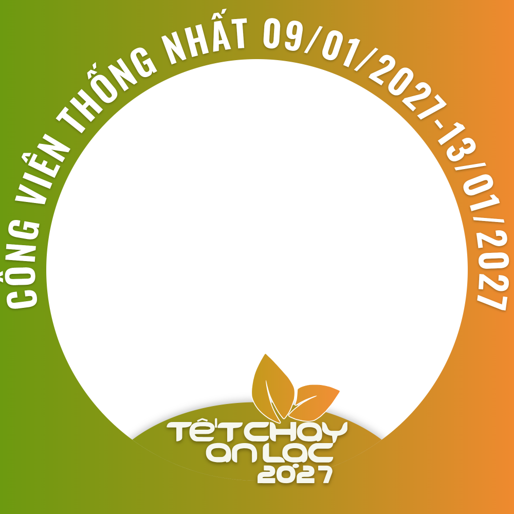

Lan tỏa nét đẹp ẩm thực chay và lựa chọn sống có ý thức.
Lễ hội văn hóa · Ẩm thực chay · Sống xanh
Tết Chay
An Lạc 2027
“Xuân An Lạc – Sống xanh – Gìn giữ hồn Việt”
--ngày
--giờ
--phút
--giây
5ngày lễ hội
150gian hàng
100.000lượt khách dự kiến
1.000VĐV Vegan Run
Giới thiệu
Một không gian an lành giữa lòng Thủ đô
Tết Chay An Lạc 2027 là không gian văn hóa phản ánh sự chuyển mình trong nhận thức cộng đồng về phát triển bền vững, kinh tế tuần hoàn và lối sống xanh. Toàn bộ cảnh quan, từ cổng chào đến gian hàng, được dựng bằng 100% vật liệu tự nhiên: mây, tre, nứa, mành tăm tre và lá cọ.
Cơ thể khỏe mạnh, nếp sống tử tế, yêu thương chăm sóc gia đình.
Giảm rác thải, cổ vũ tiêu dùng có trách nhiệm với thiên nhiên.
Gìn giữ văn hóa, làng nghề, món ăn và sản phẩm thuần Việt.
An vui, lợi lạc cho cộng đồng; kết nối, sẻ chia và phụng sự xã hội.
Đơn vị tổ chứcCộng đồng ăn chay Việt Nam phối hợp với Hiệp hội Chống hàng giả và Bảo vệ thương hiệu Hà Nội
Lịch trình
Năm ngày hội an lạc
Xuyên suốt sự kiện là hành trình “Hộ chiếu An Lạc”: ghé các khu, nhận dấu và nhận quà.
Hoạt động tiền sự kiện 19/12 – 27/12/2026
- Lễ dâng hương, viếng Lăng Bác – Ban Tổ chức báo công, cầu cho ngày hội bình an, thời tiết thuận hòa.
- Đạp xe diễu hành – Lan tỏa thông điệp bảo vệ môi trường và rèn luyện sức khỏe.
- Giải bóng đá giao hữu chay – Giao lưu thể thao, tinh thần đoàn kết của cộng đồng ăn chay.
Ngày 1Xuân An Lạc – Mở hội
- Đón khách qua 7 lối vào
Bắt đầu hành trình tham quan, trải nghiệm và mua sắm tại 150 gian hàng.
- Đêm Khai mạc “Tết Chay An Lạc 2027”
Các tiết mục nghệ thuật chào đón mùa xuân.
Ngày 2Sức sống xanh & Nét đẹp ẩm thực
- Vegan Run 2027
Chạy bộ dưới tán cây quanh Hồ Bảy Mẫu và Đảo Hòa Bình. Xem chi tiết →
- Mâm cỗ chay quê hương khổng lồ – Kỷ lục Việt Nam
7 món thuần thực vật, sau đó là nghi thức “Thụ lộc”: chia phần ăn đến tận tay bà con.
- Talkshow “Ăn chay sống khỏe giữa đời thường”
Trò chuyện gần gũi cùng khách mời.
Ngày 3Tinh hoa ẩm thực & Hồn Việt
- Cuộc thi nấu ăn “Tinh hoa ẩm thực chay Việt Nam”
Các đầu bếp sáng tạo hương vị và màu sắc món chay. Xem thể lệ →
- Đêm văn nghệ truyền thống
Thanh âm dân tộc và vẻ đẹp văn hóa dân gian.
Ngày 4Ươm mầm An Lạc & Gìn giữ môi trường
- Chuỗi hoạt động “Sống xanh”
Ươm mầm an lạc, phát động trồng cây, hướng dẫn phân loại rác tại nhà, đổi rác lấy cây và nhiều hành động thiết thực vì môi trường.
Ngày 5Tri ân & Bế mạc
- Hoạt động thiện nguyện
Trao quà thiết thực tới các gia đình có hoàn cảnh khó khăn trên địa bàn phường Hai Bà Trưng.
- Lễ Bế mạc
Tri ân những người đồng hành, khép lại sự kiện trong an vui.
Video
Xem trước Tết Chay An Lạc
Chia sẻ để cùng lan tỏa một cái Tết lành – cho mình, cho người, cho đất trời. #TetChayAnLac2027
Không gian
150 gian hàng, 10 phân khu
Chọn một khu trên sơ đồ để xem chi tiết.
ACổng sự kiện
Không gian đón khách nhẹ nhàng, gửi tặng quà nhỏ và voucher cho du khách cùng lan tỏa sự kiện.
BPhố Ẩm thực Chay
Ba góc ấm cúng: Chay truyền thống, Thuần thực vật (Vegan) và Ẩm thực thực dưỡng.
C·FLàng Tết Việt & Làng Nghề
Góc thư pháp dưới tán cổ thụ; không gian tôn vinh đôi bàn tay nghệ nhân thủ công.
D·EPhố Xanh & Phố OCOP
Nông sản chuẩn Organic/VietGAP, vật phẩm tâm linh và sản phẩm tiêu dùng xanh.
G·HAn Lạc Tâm & Trò chơi dân gian
Góc trà đạo tĩnh tâm, sân chơi gia đình, workshop môi trường, trải nghiệm văn hóa truyền thống.
I·JSân khấu An Lạc & Khởi nghiệp xanh
Giao lưu văn hóa, lan tỏa thông điệp xanh, nơi các dự án xanh được ươm mầm, chắp cánh.
Đơn vị tham gia
Những người đồng hành cùng lễ hội
Doanh nghiệp, hợp tác xã, làng nghề và nhà hàng chay góp mặt tại 150 gian hàng của Tết Chay An Lạc 2027.
Danh sách đơn vị tham gia đang được cập nhật.
Sáng Chủ Nhật · 10/01/2027
Vegan Run 2027
Chạy xanh vì sức khỏe & môi trường. Dành cho mọi người: ăn chay trường, chay kỳ, và cả những người ăn mặn muốn sống khỏe hơn.
- 05:30 – 09:30Thời gian vận hành
- Cổng Trần Nhân Tông – Đại Cồ ViệtĐiểm tập trung
- ~1.000 VĐVQuy mô
10kmXuất phát 06:00300 suất
5kmXuất phát 06:15500 suất
2kmXuất phát 06:30200 suất · gia đình & trẻ em
Lịch trình giải chạy
- Nhận Racekit (Bib, áo chạy) tại khu vực BTC
- Tình nguyện viên vào vị trí, mở quầy gửi đồ
- Khởi động tập thể
- Xuất phát 10km / 5km / 2km
- Về đích, nhận huy chương
- Trao giải, chụp ảnh lưu niệm, dọn dẹp “trả lại mặt bằng xanh”
Thứ Hai · 11/01/2027
Cuộc thi nấu ăn “Tinh hoa ẩm thực chay Việt Nam”
Vietnam Vegetarian Culinary Championship 2027 (VVCC) · Chủ đề “Tinh hoa chay Việt – Sáng tạo cho tương lai”. Kết nối người làm bếp ba miền Bắc – Trung – Nam.
Hai bảng thi
Bảng A – Chuyên nghiệp: bếp trưởng, bếp phó, nghệ nhân, giảng viên, đầu bếp nhà hàng/khách sạn.
Bảng B – Mở rộng: sinh viên ẩm thực, đầu bếp trẻ, người yêu nấu chay tại gia.
15–20 đội (2–3 người/đội hoặc cá nhân), 30–40 thí sinh.
Thể lệ
Sơ khảo: gửi công thức, hình ảnh và câu chuyện văn hóa sau món ăn.
Chung kết: nhận “Hộp Đen bí ẩn” 5–7 nguyên liệu bản sắc Việt; 120 phút hoàn thành thực đơn 3 món: khai vị, món chính, tráng miệng; sau đó thuyết trình tác phẩm.
Giải thưởng
Bảng A: Giải Đặc biệt (cúp vàng + tiền thưởng), Nhất, Nhì, Ba.
Bảng B: 1 Nhất, 2 Nhì, 3 Ba, 5–10 Khuyến khích.
Giải chuyên đề: sáng tạo nhất, bản sắc Việt, trình bày đẹp nhất, nguyên liệu địa phương, đầu bếp trẻ triển vọng, truyền thông yêu thích.
Tiêu chí chấm điểm (thang 100)
Hội đồng danh dự: đại diện Bộ VH-TT-DL, Hiệp hội Văn hóa Ẩm thực Việt Nam, Sở Du lịch Hà Nội. Ban giám khảo chuyên môn gồm nghệ nhân, chuyên gia ẩm thực chay, bếp trưởng khách sạn 5 sao, giảng viên và chuyên gia dinh dưỡng.
Đồng hành cùng lễ hội
Gói tài trợ
Tiếp cận trực tiếp 100.000 lượt khách trong 5 ngày, gắn thương hiệu với 5 giá trị Chay – Lành – Xanh – Việt – An Lạc.
Tài trợ tổng thể sự kiện
Kim Cương
700.000.000VNĐ
Nhà tài trợ danh xưng
- Tên thương hiệu song hành tên sự kiện
- Logo trung tâm, lớn nhất tại cổng chào, sân khấu, check-in, ấn phẩm
- 02 gian hàng vị trí đắc địa
- Phát biểu tại Khai mạc & Bế mạc
- Đặc quyền Trạm Livestream, kết nối KOL
Vàng
300.000.000VNĐ
Phủ sóng các phân khu điểm nhấn
- Logo lớn tại Phố Ẩm thực, Phố Xanh & OCOP, Làng Tết Việt
- MC vinh danh suốt 5 ngày
- 01 gian hàng tiêu chuẩn
- Logo tại Talkshow & Đêm văn nghệ
Bạc
100.000.000VNĐ
Hiệu quả cho doanh nghiệp vừa & nhỏ
- Logo trên standee, backdrop, màn LED
- Ưu tiên chọn vị trí gian hàng
- Chứng nhận “Doanh nghiệp đồng hành vì lối sống xanh”
Hiện vật & Vận hành
50.000.000VNĐ
Đại sứ Môi trường / An toàn
- Cung cấp bao bì sinh thái, dịch vụ y tế, trạm rác 3 ngăn
- Vinh danh “Đại sứ Môi trường”
Tài trợ hạng mục chuyên đề
Thể thao Xanh – Vegan Run250.000.000 VNĐ
Danh xưng giải chạy; logo trên áo, Bib, huy chương của 1.000 VĐV.
Cuộc thi nấu ăn “Tinh hoa ẩm thực”200.000.000 VNĐ
Sản phẩm vào “Hộp Đen bí ẩn”; logo trên tạp dề thí sinh.
Kỷ lục Việt Nam – Mâm cỗ chay150.000.000 VNĐ
Độc quyền hình ảnh khu mâm cỗ 7 món và nghi thức “Thụ lộc”.
Cộng đồng & Thiện nguyện50.000.000 VNĐ
Cùng BTC trao quà cho gia đình khó khăn phường Hai Bà Trưng.
Thông tin cho khách tham quan
Đến lễ hội an vui, trở về nhẹ nhàng
Sự kiện Xanh – Zero Waste
Nói không với túi ni-lông, hộp xốp, nhựa dùng một lần. Gian hàng dùng hộp bã mía, cốc PLA, ống hút gạo. Trạm rác phân loại 3 ngăn: Hữu cơ – Tái chế – Vô cơ, có tình nguyện viên áo xanh hướng dẫn.
An toàn thực phẩm
Ban y tế lấy mẫu đồ ăn hằng ngày. Góc Lưu mẫu Thực phẩm Trung tâm duy trì nhiệt độ lạnh tiêu chuẩn. Gian hàng dùng bếp từ/bếp điện thay bếp gas.
Đi lại
Khuyến khích đi xe buýt và phương tiện công cộng. Mở 7 lối vào công viên. Đỗ xe tạm trên vỉa hè đường Trần Nhân Tông. Hạn chế xe tải ra vào 08:00–22:00.
Thời tiết
Tháng Giêng Hà Nội có thể mưa rét: hãy mặc ấm. BTC có sẵn bạt trong suốt che chắn khi trời mưa.
Media & Livestream
Không gian Media & KOL Lounge cho người sáng tạo nội dung; Trạm Livestream giúp gian hàng giới thiệu sản phẩm khắp mọi miền.
Hộ chiếu An Lạc
Nhận hộ chiếu tại Cổng sự kiện (Khu A), ghé các phân khu để lấy dấu và nhận quà từ Ban Tổ chức.
Khung ảnh đại diện
Thay ảnh đại diện, cùng lan tỏa Tết Chay An Lạc 2027
Ghép ảnh của bạn vào khung chính thức của lễ hội chỉ trong vài giây, rồi đổi ảnh đại diện Facebook, Zalo để rủ bạn bè cùng đến Công viên Thống Nhất.
- Chọn ảnhẢnh chân dung từ điện thoại hoặc máy tính.
- Căn chỉnhKéo, phóng to, xoay và chỉnh độ sáng cho đẹp.
- Tải về & chia sẻẢnh JPG vuông 2000×2000, sẵn sàng đăng.


Tin tức
Tin mới từ Ban Tổ chức
Đăng ký & liên hệ
Cùng lan tỏa xuân an lạc
Đăng ký gian hàng, chạy Vegan Run, dự thi nấu ăn, làm tình nguyện viên hoặc đồng hành tài trợ. Ban Tổ chức sẽ liên hệ lại với bạn.
- Hotline: [cập nhật số điện thoại]
- Email: [cập nhật email BTC]
- Fanpage: [cập nhật link fanpage]